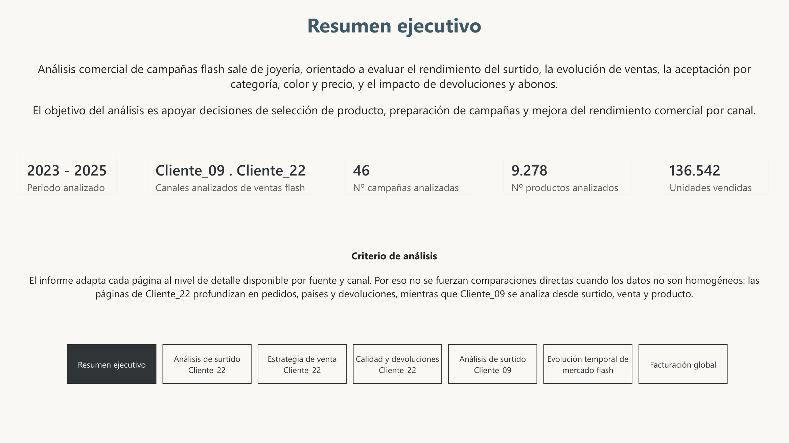
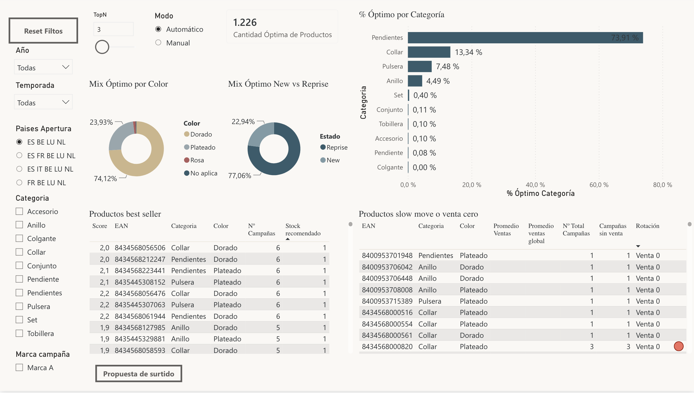
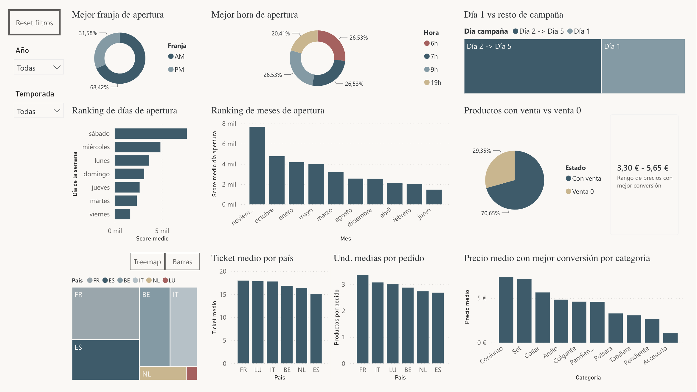
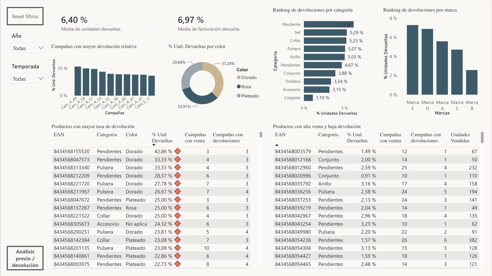
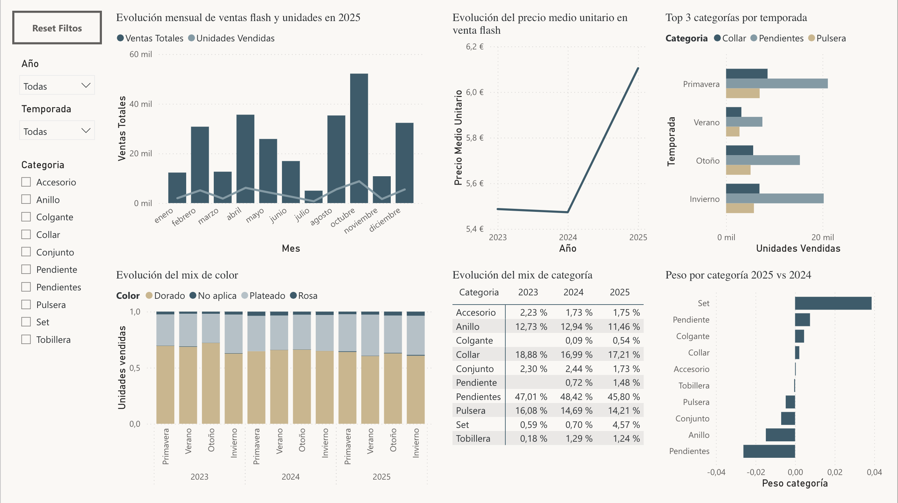
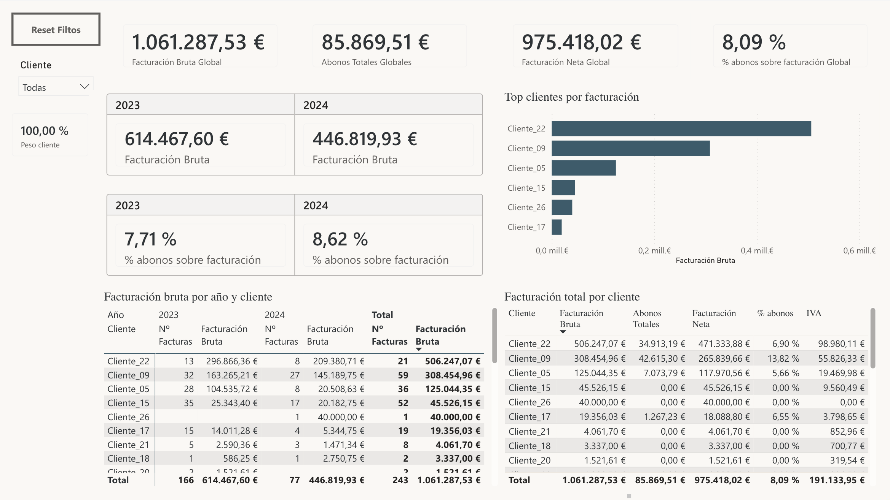

Sobre el proyecto
Proyecto Power BI que recrea un análisis comercial de campañas flash sale en retail/ecommerce, inspirado en procesos reales de análisis de ventas, surtido, devoluciones, campañas y facturación.
El objetivo del informe es mostrar el proceso completo de trabajo con datos: carga, limpieza, transformación, modelado, creación de medidas DAX, diseño visual y análisis orientado a la toma de decisiones comerciales.
Qué analiza el informe
- Selección de surtido para campañas flash sale.
- Ventas, unidades, productos ofertados y productos vendidos.
- Productos con mejor rendimiento, baja rotación y venta cero.
- Análisis estratégico de campañas: lanzamiento, rendimiento inicial y comportamiento por canal.
- Devoluciones, patrones de incidencia y productos problemáticos.
- Evolución temporal, facturación, abonos y seguimiento del negocio.
Capturas del informe
A continuación se muestran algunas páginas representativas del informe Power BI.

Resumen ejecutivo
Visión general del proyecto, periodo analizado, canales, campañas, productos y unidades vendidas.

Análisis de surtido
Selección de productos, mix óptimo, best sellers, productos slow move y referencias con venta cero.

Estrategia de campañas
Análisis de franjas y horas de apertura, comportamiento del primer día, ticket medio y rendimiento por país.

Calidad y devoluciones
Seguimiento de devoluciones, detección de patrones de incidencia y productos con alta venta y baja devolución.

Evolución temporal
Análisis de ventas, unidades, precio medio, categorías y cambios de mix por temporada y año.

Facturación global
Seguimiento de facturación bruta, facturación neta, abonos, clientes y evolución del negocio.
Qué demuestra este proyecto
- Capacidad para integrar datos procedentes de distintas fuentes.
- Limpieza y transformación de datos con Power Query.
- Diseño de modelo de datos orientado al análisis.
- Creación de medidas DAX para KPIs comerciales.
- Diseño de informes Power BI claros y orientados a negocio.
- Lectura analítica para apoyar decisiones comerciales y operativas.
Contacto
LinkedIn: www.linkedin.com/in/regina-ortega-grueso